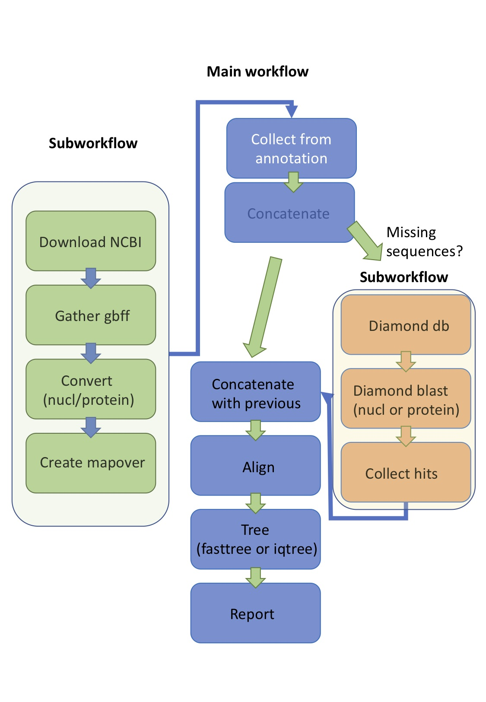

Ribosomal_snakemake¶
Ribosomal tree generation for DNA or protein sequences¶
A workflow to generate ribosomal protein phylogenetic trees, using 15 ribosomal protein sequences, after the tree of Hug et al. (2016), “A new view of the tree of life”. Nat. Microbiol. 1, 16048. Either protein or DNA sequences can be used in this workflow to build the tree. It may be of benefit to use DNA sequences for more closely related genomes, and protein sequences for those that are more divergent.
The idea behind creating trees from 15 ribosomal sequences with potential in typing, is to guide a high level taxonomic clustering which is available for all life (these sequences are found within eukaryotes, archaea and prokaryotes. Clustering can be carried out on the trees and alignment files using hierBAPS (here adapted for protein sequences: self github) and here for DNA sequences: https://github.com/gtonkinhill/rhierbaps or fastBAPS (https://github.com/gtonkinhill/fastbaps) available for DNA sequences.
{kind=link}